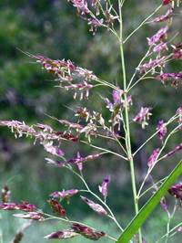
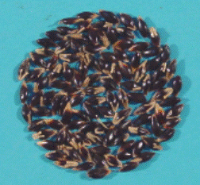
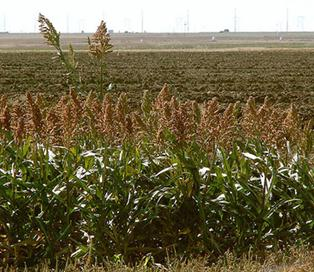

GPBR112 :: Lecture 12 :: HYBRID SEED PRODUCTION IN SORGHUM

Breeding technique for Commercial production
Cytoplasmic genetic male sterility (CGMS)
Seeds produced in different stages
Nucleus seed stage : Maintenance of basic source by seed to row progenies.
Breeder Stage : A (AxB), B and R line are multiplied
Foundation Stage : A (AxB) and R line are multiplied
Breeder and foundationseed stage : Multiplication of male sterile line or maintenance of A and B line
Certified seed stage : A x R – F1 hybrid produced.
Certified seed stage : Production of hybrid seed
Stages of Seed Production
Breeder seed ---> A x B - B - R
Foundation seed ---> A x B - B - R
Certified seed ---> A x R
Popular hybrids of their parents: The first hybrid (CSH 1) was released in 1964. In 1969, the Coordinated Sorghum Improvement Project was established. Now there are more than 30 hybrids. Some popular are
CSH1 |
CK 60 A x IS 84 |
CSH5 |
2077A x CS3541 |
CSH 9 |
MS 296 A x CS 3541 |
COH2 |
2219A x IS3541(Kovilpatti Tall) |
COH3 |
2077A x CO21 |
COH4 |
296A x TNS30 |
CSH 13 R |
296 A x RS 29 |
CSH 14 |
AKMS 14A x AKR 150 |
CSH 16 |
27 A x C 43 |
CSH 15 (R) |
104 A x R 585 |
CSH 17 |
AKMS 14A x RS 673 |
Stages of seed multiplication : Breeder seed – foundation seed –
certified seed.
Foundation seed production : A and B line are raised in 4:2
ratio with 4 rows of B line as border
row and allowed for cross pollination.
The seeds from A line will be collected
as A line seeds (multiplied).
Certified seed production : Hybrid seed production
Commercial in Hybrid seed production techniques
|
Isolation distance |
|
FS |
CS |
|
Normal |
200 |
100 |
On presence of Johnson grass |
400 |
400 |
On presence of forage sorghum |
400 |
200 |
Hybrids |
300 |
200 |
 Johnson grass Forage sorghum

Seeds and sowing
Seed rate : A line : 8 kg ha-1
R line : 4 kg ha-1
Spacing : A line : 45 x 30cm
R line : 45 x solid row spacing.
Planting ratio : Foundation seed stage: 4:2 (A: B)
Certified seed stage : 5.2 (A:R)
Border rows : 4 rows of male (either B or R line)
to, supply adequate pollen.
Live markers : • Live plants used for identification of
male line live markers are used.
• It should have distinguishable
morphological characters.
• Live markers can be sunflower, daincha etc.
Manures and Fertilizers
Compost : 12.5 t / ha
NPK : 100:50:50 kg ha-1
Basal : 50:50:5 kg ha-1
Top dressing : 25kg N after last ploughing 25kg N after boot leaf stage (45 days)
Synchronization technique
- Staggered sowing: Sowing of male parent and female parents are adjusted in such a way that both parents come to flowering at the same time.
- CSH-5, MS 2077 A must be sown 10-15 days earlier to the male CS 3541,
- CSH 6, the female parent MS 2219 A can be sown simultaneously with CS 3541
- CSH 9, the female parent MS 296 A must be sown 7-10 days earlier than male CS 3541 in November- December season.
- Spraying growth retardent MH 500 ppm at 45 DAS, delays flowering in advancing parent. MH wont dissolve in water and hence dissolve it in NaOH and then mix with water.
- Urea spraying 1% to the lagging parent.
- Withhold one irrigation to the advancing parent.
- Spraying CCC 300 ppm will delay flowering.
Roguing: Do it in both parents.
Off types

In female line remove : off types, wild types, pollen shedders,
rogues, partials, volunteer plants, diseased
plants, R line, mosaic plants, late / Early flowering plant
In male line remove : Rogues, A line, Diseased plants, Late /
early flowering plants, Wild types
Types of contamination
Presence of B line in A line called as pollen shedders
Presence of A line in Bline called as off type
Presence of R line in B line called as rogue
Presence of B line in B line called as rogue
Presence of B line in Rline called as rogue
Presence of B line in R line called as rogue
Pollen shedders and off type cause physical contamination, whereas, rogue cause physical and genetical contamination.
Pollen shedders
Presence of B line plants in A line are called pollen shedders.
Partials
In certain A line plants, a part of the earhead-shed pollen due to the removal of sterility due to parental impurity (or) developmental variation or temperature.
Field Standards
|
Isolation distance |
|
FS |
CS |
|
Offtypes (max) Varieties |
0.05 |
0.10 |
Hybrids |
0.05 |
0.10 |
Pollen shedders (max) |
0.05 |
0.10 |
Designated diseased plants (max) (Ergot and smut) |
0.05 |
0.10 |
Designated disease
- Kernel smut
- Head smut
- Sugary disease of sorghum
- It is specific to hybrid
- Occur due to low seed set
- Spray rogor 0.03% (or)
- Endosulfan 0.07%
Method of harvesting
Male and female lines should be harvested separately. The male rows are harvested first and transported to separate threshing floor. Like that female rows are harvested and threshed separately.
Threshing
- At the time of threshing the seed moisture content should be reduced around 15-18%. Threshing can be done by beating the earheads with bamboo sticks.
- While using the mechanical threshers, care should be taken to avoid mechanical damage.
Drying
Seed should be dried to 12% for short term storage and 8% for long term storage.
Processing
The sorghum seeds can be processed in OSAW cleaner cum grader using 9/64" round perforated metal sieve.
Seed treatment and storage
- The seeds are treated with captan or thiram @ 2 g/kg of seed and pack it in cloth bag at 12% moisture content for short term storage and 8% moisture content in 700 gauge poly ethylene bag for long term storage (or)
- The seeds can also be treated with halogen mixture @ 3 g/kg of seeds. The halogen mixture is prepared by mixing CaOCl2 and CaCO3 +Albizzia amara at the rate of 5:4:1 and this mixture is kept in an air tight plastic container for 1 week. After one week the mixture is used for seed treatment.
- The treated seeds can be stored upto 12 months under open storage and upto 18 months in moisture vapour proof containers, provided it is not infested by the storage insects.
Seed yield : 3000 kg ha-1
Seed standards
|
Foundation seed |
Certified seed |
Physical purity (%) |
98 |
98 |
Inert matter (%) |
2 |
2 |
Other crop seed |
5 kg-1 |
10 kg-1 |
Weed seed |
10 kg-1 |
20 kg-1 |
Other distinguishable variety |
10 kg-1 |
20 kg-1 |
Ergot disease by number |
0.020% |
0.040% |
Moisture content |
|
|
Moisture pervious container |
12 |
12 |
Moisture vapour proof container |
8 |
8 |
Others – as in varieties
| Download this lecture as PDF here |